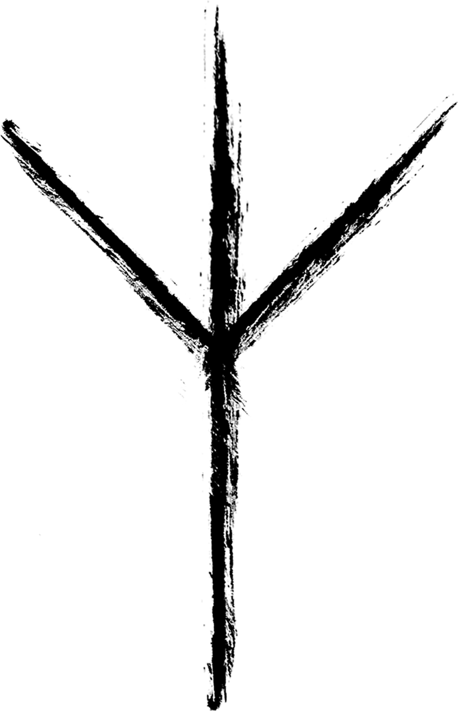

KREA
Tvořivá dílna
+
Kreativum Teletník je místem, kde se rodí nové myšlenky a vznikají neotřelá díla. Je to prostor pro umělce, designéry a všechny tvůrčí duše, hledající inspiraci a klidné útočiště. Ať už pracuješ na osobním projektu, nebo hledáš spolupráci s ostatními tvůrci, u nás najdeš vše, co potřebuješ. Vyzkoušej si ateliér vybavený technologiemi, zúčastni se workshopů nebo se prostě jen inspiruj atmosférou tohoto jedinečného místa.
TIVUM
Spojení minulosti a budoucnosti
+Bývalý teletník je dnes živoucí laboratoří, kde se setkává historie s nejmodernějšími technologiemi. Experimentujeme s umělou inteligencí, robotikou a dalšími inovativními řešeními. Chceme ukázat, že umění, technologie a příroda mohou existovat v harmonii. Pokud tě zajímá, jak bude přemýšlet budoucnost, přijď se k nám podívat.

TELE
Srdce projektu
+
Teletník je duší celého areálu. Jeho unikátní architektura a historie poskytují ideální podmínky pro experimenty, umělecké rezidence a osobní rozvoj. Prozkoumej naše prostory, zúčastni se našich akcí a nech se inspirovat. Teletník je místem, kde se můžeš stát součástí něčeho většího.
TNÍK
Dobrodružství začíná
+Tník je místem, kde se můžeš ztratit v myšlenkách nebo objevovat nové světy. Obklopen přírodou, najdeš zde klidné útočiště pro relaxaci, ale také prostor pro aktivní odpočinek a poznávání. Ať už hledáš inspiraci pro svou uměleckou tvorbu, nebo chceš jednoduše uniknout z ruchu města, u nás si přijdeš na své.
Kreativum Teletník se nachází v obci Runářov, přibližně 3 km jižně od Konice. Runářovem prochází silnice spojující jej s Jednovem a Konicí. Přesná poloha je 49.5713139N, 16.8810283E.
Máte zájem o Kreativum Teletník? Neváhejte nás kontaktovat!
- E-mail: teletnik@avirtu.net
- Telefon: +420 604 761 154